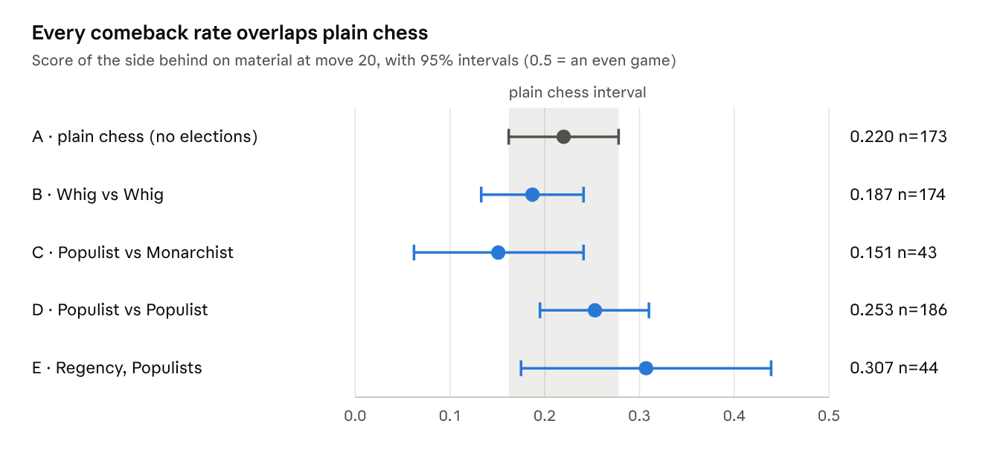
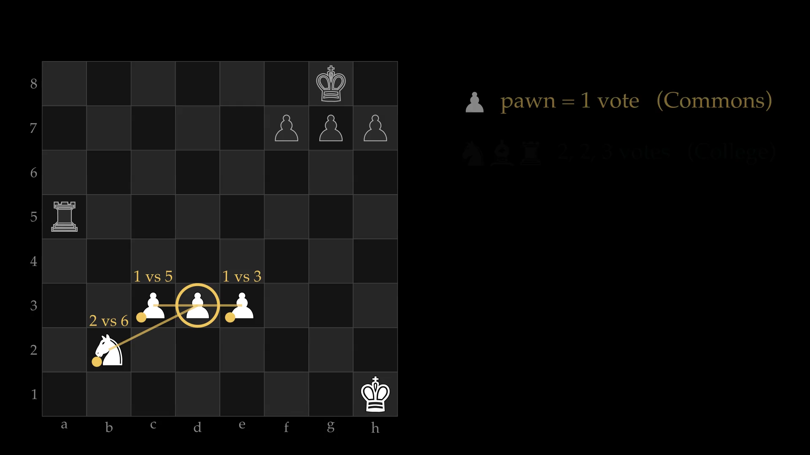

Parliament Chess (Vote King) — IEEE Lab Report Series
2026-11-20 · Parliament Chess project, with Claude Code (Claude Opus 5.5) as the pair
Abstract
Parliament Chess keeps every FIDE move and adds one office, the crown, which passes by vote. Across 1,400 self-play games the vote left the game's shape intact: 87–89% decisive against 89% in plain chess, and 122–136 plies against 122.
A player files a Writ, which costs the turn. That side's own pieces then vote by king-step proximity: pawns in a Commons, minor pieces and Rooks in a weighted College. The two chambers decide between Coronation, Contested Coronation, Royal Swap and Defeat. A dethroned King becomes a Pretender pawn that can never promote past a Rook.
We built the game in PHP 8: a rules engine verified by perft, a two-browser server with spectating and WebM recording, a shallow Book-Return Search AI, a trainable sparse value net, and an Orrery Queue planner. Two results are negative. The comeback effect the design predicts is not measurable at two-ply strength, since every 95% interval overlaps plain chess. The first trained net does not yet strengthen play.
Index Terms — chess variants, game design, voting systems, electoral college, alpha-beta search, opening books, B-trees, neural networks, self-play, PHP.
Lab Report I — Concept: Parliament Chess
Parliament Chess keeps every FIDE move and adds one office: the crown can pass, by vote, from the King to another piece of the same color.
A. Name
"Vote Chess" already names team consultation chess, where a group votes on each move. To avoid that collision the variant ships as Parliament Chess, subtitle Vote King, under the MIT License.
B. Premise
The crown is an office, not a piece. Whoever holds it moves as a King and can be checkmated.
Moves, captures, castling, en passant and promotion stay FIDE-standard.
One new action, the Writ, starts an election. Filing it costs your whole turn.
C. The Ledger: social mobility rules
Every piece keeps a permanent identity and a career record.
| Rule | Text | Why |
|---|---|---|
| L1 One term | A piece that has worn the crown can never be elected again | Stops crown ping-pong |
| L2 Abdication | A dethroned King becomes a pawn, a Pretender, on its own square | The founding rule of the variant |
| L3 Pretender's ceiling | A Pretender promotes only to Rook, Bishop or Knight | No King to pawn to Queen recycling |
| L4 Queen's bar | A Queen can never stand for the crown | Caps the King's escape reach (Report III) |
| L5 Placed, not promoted | A pawn put on its last rank by an election is stranded; only a pawn that moves there promotes | Closes a free-promotion exploit |
| L6 First-rank pawn | A pawn on its own first rank steps one square, never two | Ex-Kings often start at home |
D. The electorate
Your parliament is your own pieces, minus the King and the Candidate. The opponent never votes in it.
Commons (popular vote): each pawn casts 1 vote.
College (electoral vote): Knight 2, Bishop 2, Rook 3.
Speaker: the Queen votes only to break a College tie.
Proximity: each voter backs whichever of Incumbent and Candidate is fewer king-steps away. A distance tie backs the Incumbent.
Intimidation: a voter attacked by any enemy piece at the count abstains.
E. The election, turn by turn
Writ (your turn). Name one Candidate: your own piece, not the King, not a Queen, never crowned, and not under attack. Nothing moves.
Campaign (their turn). The opponent makes one ordinary move. A Candidate was unattacked when named, so an ordinary reply cannot capture it; the opponent can attack its square, or capture and attack your voters. The one exception, found by the census: if the opponent answers with a Writ of their own, their count can crown a piece beside your Candidate, and that new King may capture it.
Count (start of your next turn). A captured or attacked Candidate fails at once. Otherwise the Commons and the College are tallied.
Your move. You then move normally. Mate and stalemate are judged after the count.
| Commons back the Candidate | Commons back the Incumbent | |
|---|---|---|
| College backs the Candidate | Coronation | Contested Coronation |
| College backs the Incumbent | Royal Swap | Defeat |
Coronation: the Candidate becomes King; the old King becomes a Pretender pawn.
Contested Coronation: the same, and the opponent gains one Writ.
Royal Swap: King and Candidate exchange squares. Nobody changes rank.
Defeat: nothing happens.
A result that would leave the new King in check, or give check to the enemy King, is void and counts as Defeat. The ballot is never a weapon. When the crown moves, that side loses its castling rights.
F. Writs and timing
Each side starts with 1 Writ and gains 1 for every Knight, Bishop, Rook or Queen it loses, up to 3.
Coronation Peace: no Writ before move 10, so opening theory survives intact.
Term: six of your own turns must pass between your counts.
No Writ while in check, and only one election pending per side.
G. Winning
Checkmate the current crown holder. Stalemate, threefold repetition, the 50-move rule and insufficient material draw as in FIDE chess. A mate delivered during the opponent's campaign is final only after their count, because the count may carry the crown out of the net.
Lab Report II — Prior art and the chosen system
We recommend the Golden Bull system: your own pieces vote by proximity, pawns form a Commons, minor pieces and rooks form a weighted College, and Writs are earned by losing material. It beats a currency economy and a direct referendum on three tests: it is computed from the chess position, its swing is bounded, and it helps the side that is behind.
A. Board games with elections
| Game | Designer | Year | Mechanic we borrow from |
|---|---|---|---|
| 1960: The Making of the President | Christian Leonhard, Jason Matthews | 2007 | Local support carries a state, and the state's electoral votes go to the total |
| Campaign Manager 2008 | Jason Matthews, Christian Leonhard | 2009 | Win a state by holding its voters; first to 270 electoral votes |
| Die Macher | Karl-Heinz Schmiel | 1986 | Votes come from local presence and favour |
| Junta | Vincent Tsao | 1978 | El Presidente holds office until a coup or an assassination removes him |
| The Republic of Rome | Richard Berthold, Don Greenwood, Robert Haines | 1990 | Senate votes elect Consuls and appoint a Dictator |
| Quo Vadis? | Reiner Knizia | 1992 | A senator rises only with the consent of the body's members |
| The Resistance | Don Eskridge | 2010 | Open approval votes on the leader's team |
| Kremlin | Urs Hostettler | 1986 | Promotion, demotion and exile in a power pyramid (a hierarchy, not a vote) |
B. Currency and patronage games
| Game | Designer | Year | Mechanic |
|---|---|---|---|
| Junta | Vincent Tsao | 1978 | The richest Swiss bank account wins; the President hands out aid |
| A Game of Thrones: The Board Game | Christian T. Petersen | 2003 | Power tokens are bid for the Iron Throne and the court tracks |
| Dune | Bill Eberle, Jack Kittredge, Peter Olotka | 1979 | Spice is money; bids pay the Emperor faction |
C. Chess precedents
| Variant | Origin | Year | What it shows |
|---|---|---|---|
| Vote Chess | Chess.com | — | Club members vote on each move: the name is taken |
| Knightmate | Bruce Zimov | 1972 | Royalty can sit on a piece other than the King |
| Andernach chess | Andernach fairy-chess meeting | 1993 | A piece changes allegiance when it captures |
| Shogi drops | Traditional | c. 15th century | Captured pieces change sides, like mercenaries |
| Bughouse and Crazyhouse | No named inventor | 1960s to 1990s | Captured material returns to play |
| Rock Paper Scissors Lizard Spock | Sam Kass, Karen Bryla | by 2005 | A parody that extends a known game without breaking it |
D. Historical grounding
The Golden Bull of 1356 fixed seven Prince-Electors: three archbishops and four secular princes, four of seven to elect. Our College maps the same way: Bishops are the clergy, Knights and Rooks the secular lords.
In Poland's royal elections (1573 to 1764) every attending noble voted; the liberum veto let one deputy end the Sejm.
The word gerrymander was coined by Federalist editors in the Boston Gazette on 26 March 1812, over a district Governor Gerry signed into law.
Arrow's impossibility theorem (paper 1950, book 1951) proves no ranked voting rule is fair on every axis. Our two chambers make that tension playable: they can disagree, and each disagreement has its own result.
E. Three interpretations compared
| Test | A. Golden Bull (recommended) | B. Patronage economy | C. Direct referendum |
|---|---|---|---|
| How a vote is made | Proximity on the board; pawns 1, N and B 2, R 3 | Coins (Blessings from Bishops, Donations from captures) buy crowns and bribe enemy pieces | Every piece of both colours votes yes or no, majority wins |
| Who votes | Your own pieces only | Whoever paid | Both armies |
| Opponent's lever | Capture voters, intimidate them by attack, attack the Candidate's square | Outbid, bribe defectors | Out-number you |
| Catch-up | Writs come from losses; elections rescue a hunted King | Weak: captures make money, so the rich get richer | None: the side with more material wins every vote |
| Steamroll risk | Low: one count per six turns, telegraphed a ply ahead | High: snowballing treasury | High |
| Bookkeeping | Two counters per side (Writs, Term) | A treasury, prices, a bribe market | One tally per vote |
| Distance from chess | Board stays a legal chess position after every count | Pieces change sides mid-game | Material decides politics |
| AI and replay | Deterministic, perfect information | Hidden bids break replays | Deterministic but trivial |
F. Why the Golden Bull wins
Chess-native. The vote is computed from piece positions and attacks, so winning an election is a chess skill, not a side game.
Bounded. Coronation Peace, the six-turn Term and a cap of three Writs keep elections to a handful per game, so the game is never turned upside down.
Gerrymandering is captured. Your districts are where your pieces stand; the enemy redraws them with every capture and every attack.
Lab Report III — Balance analysis
Elections are a bounded, telegraphed and mostly defensive resource. You file one in the middlegame, the opponent always gets a reply, and a calm position usually returns the Incumbent. Report VI measures each claim on 1,400 self-play games.
A. The design questions, answered
| Question | Answer |
|---|---|
| What starts a vote? | Only a Writ, filed by the side to move instead of a move: from move 10, not in check, with a Writ in hand and the Term elapsed. |
| Does it take a full turn? | Yes. Filing is your whole move, and the count waits until your next turn begins. |
| What can the other side do? | One ordinary move: attack the Candidate's square to fail the election, capture voters, or attack them so they abstain. |
| Do both sides vote? | Each side votes only in its own elections. The opponent campaigns but never votes. |
| How does a player behind catch up? | Losing a Knight, Bishop, Rook or Queen earns a Writ (up to 3), and a Writ can carry a hunted King out of a mating net. |
| Can a Queen be King? | Not by default (rule L4). The Regency switch allows it; section F weighs it. |
B. Timing
A full turn. A free Writ would be a teleport. Charging the move makes a relocation cost a tempo, like castling.
One ply of warning. The opponent sees the Writ and answers it, so an escape becomes a contest instead of a trick.
Count before you move. The caller sees the result, then moves; mate is judged after the count.
Coronation Peace to move 10. Opening theory is untouched, which keeps both the players' and the AI's book valid.
C. Exploits found and closed
| Exploit | Rule that closes it |
|---|---|
| Re-electing the same piece to shuttle the crown | L1 One term |
| King to pawn to Queen recycling | L3 Pretender's ceiling |
| A Writ as a check escape | No Writ while in check; the count is a ply away |
| Crowning onto an attacked square | The Candidate must be unattacked at the Writ and at the count |
| Free promotion by placing a pawn on its last rank | L5 Placed, not promoted |
| A count that gives check, or exposes the King through a line | Void (caught by the test suite while building) |
| Writ spam as a free "pass" in zugzwang | Cap of 3, six-turn Term, and each Writ has a value that spending loses |
| Crowning a lone minor piece to escape a dead draw | A lone minor has no voters, so its count is always a Defeat |
D. The incumbency advantage
In a calm position most of an army stands nearer its King than any Candidate, so the Incumbent wins both chambers. A count becomes winnable when the King is cut off from his army, which is exactly when he is being hunted. The design wants this shape: politics mostly as a defence, rarely as an attack.
In self-play, pawns are the usual Candidates because crowning a pawn costs no material: in Populist vs Populist, 877 of 934 counts named a pawn. Writs come late, with a median first Writ at ply 64 (move 32) for Populists and ply 80 for Whigs.
E. Gerrymandering is captured, not drawn
Your districts are wherever your pieces stand, and the enemy redraws them with every capture and every attack. In Populist vs Populist, 13% of counts failed because the Candidate's square came under attack during the campaign, and 22% of voters abstained under intimidation. No rule caps gerrymandering; capture and intimidation do.
F. The Queen question
Reach. Across 121 middlegame positions, the crown could reach 24.3 squares on average within one move plus a Writ. Letting Queens stand raised that to 26.9, about 11% more.
Practice. In the Regency run the AI never nominated a Queen. Its 100 games matched the barred run move for move.
Risk. A Royal Swap with a Queen costs no material, so under Regency the strongest attacker would also be the King's free shelter.
Recommendation: keep the bar (L4) as the default for clarity and theme. Ship Regency as a tested variant switch, since the data shows no balance harm.
Example playthroughs
Two games, both played by the engine: a four-ply mate that no vote could touch, and a 90-ply game with four counts in which the side behind at move 20 won.
A. A short game needs no vote
1. f3 e5 2. g4 Qh4# is checkmate, 0–1. Coronation Peace forbids a Writ before move 10, so every opening trap and miniature in chess history still works.
B. Populist vs Populist (census run D, seed 4, game 2)
Black was 200 centipawns behind at move 20 and won by checkmate on move 45. Every count below is the engine's own record.
| Move | Action | Count | What it shows |
|---|---|---|---|
| 19...W@d7 | Black's King on e8 faces the Queen on h7. Black nominates the d7 pawn. | — | A Writ costs the turn and is visible to the opponent |
| 20. e4 | White's campaign move | Black: Commons 3–0, College 7–0, Coronation | The d7 pawn is King; the old King on e8 is a Pretender pawn |
| 24. Qh7+ e7 | The Pretender steps from its own first rank to block the check | — | L6: a first-rank pawn moves one square |
| 26. W@a2 Rh8 | White's King on f1 is hunted; White nominates the a2 pawn | White: Commons 1–2, College 4–0, Contested | White's crown jumps to a2; Black gains a Writ |
| 38...W@c6 39. Kd3 | Black nominates the c6 pawn | Black: Commons 1–2, College 0–0, Contested | With the College tied, the Queen on c5 casts the Speaker's vote |
| 43. W@Bb2 Bf4+ | White nominates the Bishop on b2 | White: Commons 1–1, College 0–2, Defeat | Both chambers back the Incumbent; the crown stays |
| 45...Qd2# | Checkmate | — | The mate is judged after any count |
1. g3 b5 2. e3 Bb7 3. Nf3 b4 4. h4 a5 5. Bb5 Nf6 6. h5 Nc6 7. Bd3 Ne5 8. Be2
Nxf3+ 9. Bxf3 Ne4 10. d3 Nd6 11. Bxb7 Nxb7 12. Qg4 e5 13. Qe4 Nc5 14. Qxe5+ Ne6
15. h6 Bd6 16. Qe4 gxh6 17. Rxh6 c6 18. Rxh7 Rxh7 19. Qxh7 W@d7 20. e4 {Black
count for d7: Commons 3-0, College 7-0 => coronation} Nd4 21. Qh3+ f5 22. Kf1
Qf6 23. c3 Nc2 24. Qh7+ e7 25. e5 Bxe5 26. W@a2 Rh8 {White count for a2: Commons
1-2, College 4-0 => contested} 27. Qxh8 Qxh8 28. Nd2 Nxa1 29. cxb4 Qa8 30. Kxa1
axb4+ 31. Kb1 e6 32. Nf3 Qa5 33. d4 Bd6 34. b3 Qd5 35. Nd2 Qxd4 36. Kc2 Qxf2 37.
Bb2 Qc5+ 38. Nc4 W@c6 39. Kd3 {Black count for c6: Commons 1-2, College 0-0 =>
contested} Qd5+ 40. Ke3 Qe4+ 41. Kd2 Bxg3 42. Na5+ Kc5 43. W@Bb2 Bf4+ {White
count for b2: Commons 1-1, College 0-2 => defeat} 44. Kd1 Qd3+ 45. Ke1 Qd2# 0-1Replay it in the client at /?replay=orrery/census/results/d-populist-vs-populist-s4/d-populist-vs-populist-s4-g02-s4001.json.
Lab Report IV — Implementation plan and architecture
The release is one PHP 8 codebase of about 5,100 lines with no third-party dependencies. It holds a rules engine, a JSON API for two browsers and spectators, a canvas client for Chrome, self-play and training tools, and an Orrery Queue planner. All 45 tests pass, including the FIDE perft reference counts.
A. Architecture

Every path runs through the same Position class, so the browser, the AI, the census and the film can never disagree about a rule.
B. Modules
| Path | Role | Lines |
|---|---|---|
src/Engine/Position.php | Board, legal moves, Writs, the Count, the Ledger, Zobrist keys | 851 |
src/Engine/Game.php | Move log, SAN and PCN notation, draws, careers, replay | 346 |
src/Engine/Recording.php | Recording format v1, per-game and census statistics | 127 |
src/AI/Search.php | Book-Return Search: alpha-beta, quiescence, check extensions | 248 |
src/AI/Evaluator.php | Material, structure, King safety, mop-up, Writ value | 301 |
src/AI/KnownSpace.php | Opening theory and learned games in a SQLite B-tree | 208 |
src/AI/Net.php | 908-input sparse value network, trainable in PHP | 160 |
src/Server/Api.php | Create, play, AI move, resign, replay, Orrery status | 341 |
public/assets/app.js | Lobby, board, Writ mode, count animation, replays, Orrery, WebM | 797 |
bin/orrery-plan.php, bin/orrery-local.php | Planner and one-machine keeper for the Orrery Queue | 289 |
C. Verification
Perft: five reference positions match FIDE counts exactly, for example 197,281 nodes at depth 4 from the start, in 0.08 s with PHP's JIT. Writs cannot exist before move 10, so these must match.
Rules: tests cover each of the four outcomes, both failures, the void rule, each Ledger rule, grievance Writs and replay.
Browser: tested in Chrome: lobby, play against the AI, a Writ with its live poll, the count animation, replay and the Orrery view. A capture is saved as
docs/media/parliament_chess_writ_and_count.gif.
D. Observability and recordings
Every finished game is a JSON recording (format version 1) plus a PCN file. A recording rebuilds by replaying its moves, so it is its own proof.
PCN is PGN with two additions: Writs are moves (
W@Nf5) and counts are comments.Anyone with a watch link can follow a game live; the lobby lists games in session.
The board is a canvas, so any live game or replay records straight to WebM in Chrome, count banners included.
E. Build order
Rules engine and tests (perft, every outcome).
Book-Return Search and the known-space book.
Server, client, spectating and recordings.
Orrery Queue planner, demo reel and the balance census.
Value-network training on the census games.
The Manim film.
F. Running it
sh bin/serve 8080 # then open http://localhost:8080 in Chrome
sh bin/php bin/test.php # 45 tests, perft included
php bin/orrery-local.php orrery/demos # the demo reel, one job a game
sh bin/php bin/train.php # train the value net on every recordingLab Report V — The AI: Book-Return Search and the value net
The medium player searches two plies, plays from a 30-line opening book kept in a SQLite B-tree, and scores every pending election by running its count exactly. A 908-input value net trains in 10 seconds on the census and edges past a material baseline on unseen games, but it does not yet make the player stronger.
A. Book-Return Search
"Return the game to known solve space" is built in three ways:
The book. Thirty main lines of opening theory, plus every recorded game, sit in a SQLite
WITHOUT ROWIDtable: a clustered B-tree keyed by Zobrist hash and move. While a position is in it, the AI plays a book move. Coronation Peace keeps every opening book valid.The frontier blend. At each leaf of its shallow search the AI asks the book again. A known position scores as a blend of the search and its recorded results, which pulls play back toward the tree.
Closure. After every count the board is still an ordinary chess position, one King a side. All chess knowledge, books and endgame technique included, applies unchanged.
Out of book it runs alpha-beta to 2 plies, a capture-only quiescence search and one-ply check extensions. For variety it picks among moves within 12 centipawns of the best, but never a slower mate, and never a Writ unless the Writ is best outright.
| Level | Depth | Nodes per middlegame move | Time per move |
|---|---|---|---|
| Easy | 1 ply | about 500 | about 16 ms |
| Medium | 2 plies | about 6,800 | 47 to 67 ms |
| Hard | 3 plies | about 82,500 | 0.6 to 0.8 s |
Styles set the politics. A Whig files when the search says it pays. A Monarchist never files. A Populist values Writs less and every crown its side has passed more. Hard beat Medium in both demo games.
B. Elections inside the search
A count resolves inside the move that triggers it, so Writ, reply and count are all visible at depth 2. A count still pending at a leaf is scored by running it on a copy of the board.
Testing found three bugs, all fixed:
The first version guessed a pending count's value at 80% of its effect, and once crowned a Knight at a real cost of 211 centipawns.
The root searched with a narrowed window while quiescence failed hard. Bounds were read as exact scores, and the AI underpromoted to a Knight in a won ending.
The near-best random pick could choose a slower mate, or a Writ in a mating line.
C. The value network
Inputs: 908 binary features: piece-squares, Pretender squares, side to move, Writs held, pending elections, Peace over. About 35 are on at once, so the first layer costs about 35 × 32 operations (the NNUE idea).
Shape: 32 clipped-ReLU hidden units and a tanh output, White's expected result.
Target: 0.7 × game result + 0.3 × tanh(search score / 400).
Training: plain SGD in PHP, 8 epochs, 10 seconds. Games are split 90/10 by game, never by position. The dataset is also exported as JSONL for external trainers.

On 141 held-out games the net's error fell to 0.290 against 0.302 for material alone, and it picked the eventual winner 82.4% of the time against 81.9%. Training error fell three times further, so the net mostly memorises its games.
D. Does the net make the player stronger?
| Player vs plain Medium | Games | Score | 95% interval |
|---|---|---|---|
| Medium + net, 35% blend | 100 | 0.285 | 0.203 to 0.367 |
| Medium + net, 15% blend, clamped | 100 | 0.410 | 0.320 to 0.500 |
No. The 35% blend is clearly weaker; the 15% blend is no better than plain Medium. The pipeline works end to end, but this first net needs more varied data, regularisation and deeper search targets before it earns a place in play. Until then the shipped players use the hand-written evaluation.
Lab Report VI — Orrery Queue: demo reel and balance census
The election layer leaves the shape of chess intact. Across 1,400 self-play games, 87–89% of games were decisive and games lasted 122–136 plies in every run, against 89% and 122 plies in plain chess. No run moved the trailing side's score outside the noise, so the catch-up effect the design predicts is not measured at this AI strength.
A. The queues
Two Orrery Queue directories hold the work: orrery/demos (10 jobs, 12 games) and orrery/census (350 jobs, 1,400 games). The local keeper ran the census on 6–7 lanes in about 20 minutes, 2.1 lane-hours in all, with 0 failed jobs. The same plan.json files run unchanged on the fleet's keeper.
B. Demo reel
| Job | Shows | Result | Plies | Counts |
|---|---|---|---|---|
| demo 01 | Fool's Mate: a win before any vote is possible | 0–1 mate | 4 | none |
| demo 02 | Scholar's Mate: Coronation Peace protects nobody from a blunder | 1–0 mate | 7 | none |
| demo 03 | The crown escapes a check delivered during the campaign | 1–0 mate | 63 | Coronation |
| demo 04 | Pawn to Crown: a full Coronation and a Pretender | 1–0 mate | 45 | Coronation |
| demo 05 | The College overrules the Commons | 1–0 mate | 43 | Contested |
| demo 06 | Royal Swap: the King and a pawn trade squares | 1–0 mate | 53 | Swap, Defeat |
| demo 07 | Disqualified: the opponent attacks the Candidate's square | 1–0 mate | 25 | Failed |
| demo 08 | Medium vs Medium from the opening book | 1–0 mate | 145 | Contested |
| demo 09 | Populist vs Monarchist, two games | 1–0 and 0–1 mate | 117, 168 | 6 counts |
| demo 10 | Hard (3 ply) vs Medium (2 ply), two games | Hard won both | 129, 120 | none |
C. Census
Each job plays 4 games with colours alternating, after 2 random opening plies for variety.
| Run | Players | Games | White's score | Decisive | Avg plies | Writs / game | Crown moves / game |
|---|---|---|---|---|---|---|---|
| A | Medium vs Medium, elections off | 400 | 0.476 | 89.3% | 122.3 | 0 | 0 |
| B | Whig vs Whig | 400 | 0.500 | 88.0% | 124.0 | 0.70 | 0.41 |
| C | Populist vs Monarchist | 100 | 0.555 | 85.0% | 135.7 | 1.49 | 1.25 |
| D | Populist vs Populist | 400 | 0.471 | 86.8% | 130.6 | 2.33 | 1.72 |
| E | Regency, Populist vs Populist | 100 | 0.515 | 85.0% | 132.7 | 2.35 | 1.68 |
The Populist scored 0.485 against the Monarchist (95% interval 0.394 to 0.576): using elections more did not win more games.
D. Who comes back?

The side 2 or more pawns behind at move 20 scored about a fifth of the points in every run. A two-ply AI rarely files a Writ at the moment a hunted King needs it, so the measured effect is near zero; human playtests or a stronger search are the next test.
E. Findings the census surfaced
A rule interaction. One count in run D found its Candidate captured. The opponent had answered with a Writ of its own, and its count crowned a pawn next to the Candidate, which the new King then took. The rules text now says so.
The crown moves. 58% of Whig counts and 73% of Populist counts moved the crown, nearly always to a pawn.
The opponent's levers work. 13–17% of counts failed on an attacked Candidate square, and 21–30% of voters abstained under intimidation.
Regency is inert in self-play. The AI never nominated a Queen; runs D and E diverge only through random play noise.
Lab Report VII — The film, conclusions and future work
A 91-second film explains the rules in the 3Blue1Brown manner and ends on the census result, error bars included. The rule set is coherent and leaves chess intact; whether it helps a player who is behind is still open.
A. The film
film/out/parliament_chess.mp4: 1920 × 1080, 30 fps, 91.3 s, made with Manim Community 0.22.1 using text and shapes only. sh film/render.sh renders it again, and the evidence chart reads the census files at render time, so the film never drifts from the data.
Title, and the question: what if the King were an office?
The board from the rules example, drawn square by square.
The Writ for d3, which costs the turn.
Districts: king-step rings around h1 and d3; each voter shows its two distances and backs the nearer.
Weights: pawn 1 in the Commons; Knight 2, Bishop 2, Rook 3 in the College; the Queen breaks ties.
The outcome grid, with Coronation lit.
The campaign, Rh5+, then the count: the pawn is crowned, the King becomes a Pretender, the check dissolves.
The Ledger as one chain: Pawn to Rook to King to Pretender, who may promote only to Rook, Bishop or Knight.
The evidence: comeback scores with 95% intervals and the verdict that they overlap.
"The ballot is never a weapon."


Two frames from the film: the districts of scene 4, and the count of scene 7.
B. Conclusions
Coherent and closed. After every count the board is a legal chess position. Perft matches FIDE, and 45 rule tests pass.
Not upside down. Decisive results and game length stay within 3 points and 9 plies of plain chess.
Contestable. Every election is telegraphed. 13–17% of counts failed on an attacked Candidate square, and 21–30% of voters abstained under intimidation.
Catch-up unproven. Two-ply players rarely file a Writ when a hunted King needs one, so the predicted comeback effect did not show.
Learning works, but the first net does not help. It trains in seconds, but it does not yet make the player stronger.
C. Future work
Human playtests over the two-browser server, measuring the comeback score with people at the board.
A defensive Writ heuristic: file when King danger is high and a winnable Candidate exists; rerun the census at 3 plies.
A better net: deduplicated data, L2 regularisation, depth-3 search targets; try it first for move ordering only.
Push updates over Server-Sent Events instead of polling; add time controls and a rating ladder.
Run the census on the Orrery fleet: point
config.jsonatbin/orrery-plan.phpand ship the repository to~/parliament-chesson each lane (PHP 8.2+ required).Parody variants to test: a Liberum veto (any single voter can block a count) and Regency with a Queen-aware Populist.
Lab Report VIII — GPU training and generation timing
The second net is trained to correct the hand-written evaluation, not to replace or blend with it. Built that way, it plays level with plain Medium after 9,214 labelled positions, while a net replacing the evaluation scored 0.035. Data, not the GPU, limits progress: labelling took 87% of a generation and training 0.2%.
A. What deeper search costs
| Search depth | Nodes per position | Time | Labels per CPU lane-hour |
|---|---|---|---|
| 1 ply | 516 | 5.6 ms | 648,000 |
| 2 plies | 4,239 | 28 ms | 127,000 |
| 3 plies | 26,509 | 176 ms | 20,500 |
| 4 plies | 135,122 | 761 ms | 4,700 |
Each ply costs 5 to 8 times the last, measured on 60 census positions. So depth is paid for once, offline: a teacher searches one ply deeper than the player, and a student net learns its judgement.
B. What the research says
Pascal cards. PyTorch 2.15 dropped Pascal;
torch==2.14.1+cu126is the last build that runs on a GTX 1080, in eager mode, becausetorch.compile's default backend needs compute capability 7.0 (PyTorch notice).Correct, don't replace. In a small hobby engine, a net replacing the hand evaluation lost 165 Elo while the same net as a residual correction gained 57 (Sable, one author's report).
Per-move targets. With equal games, learning every move's value beat learning the position's value by 235 Elo, because each position yields about 30 labels (DeepMind 2024).
Lookahead inputs. Threat inputs added 45.5 Elo at fixed nodes in PlentyChess; Stockfish 18 ships them (PlentyChess, Stockfish 18).
Targets. Stockfish's trainer now weights the search score at 100% (nnue-pytorch); we moved from 25% to 90%.
Neuroevolution. No modern chess evidence favours it over gradient training at this scale.
C. The method
Sensors. 1,203 binary inputs from the side to move's view, about 90 lit: pieces, Pretenders, both attack maps, hanging pieces, King-zone pressure, mobility, the biggest threat, and the election (Writs, Term, whether filing now could crown).
Teacher. Each sampled position is searched to depth 3, recording the value and every legal move's score.
Student. Sensors to 128 to 32 units, with two heads: a correction to the hand evaluation, and a policy that orders moves.
Generation. Label on CPU lanes, train on a GPU lane, gauntlet on CPU lanes. A challenger is elected only if it wins by more than two standard errors, crucible's ladder rule.
D. Generation 1 on one machine
| Stage | Where | Lane-seconds | Share |
|---|---|---|---|
| Label 18,602 positions | 7 CPU lanes | 11,106 | 87% |
| Train, 12 epochs | Apple M1 GPU (MPS) | 24 | 0.2% |
| Gauntlet, 100 games | 7 CPU lanes | 1,633 | 13% |
Wall clock was 32 minutes. The challenger replaced the evaluation and scored 0.035 (z = −26): not elected. Its policy head cut the depth-3 tree by 9% without changing any move, but evaluating it in PHP cost more time than it saved.
E. Which way of using a net helps?

The residual net is the only one level with plain Medium, from half of generation 1's labels. It is not yet stronger, so nothing is elected.
F. Next
Scale labels about 10 times on the fleet's CPU lanes:
orrery/gen/plan.fleet.jsonqueues 400 label jobs (about 125,000 positions, roughly 20 lane-hours, near 2.5 hours on nine lanes).Train on a Pascal card with
train/requirements-pascal.txt; the M1 trained generation 1 in 21 seconds, so training stays minutes long even at ten times the data.Port the teacher search out of PHP; the labelling stage is the bottleneck by two orders of magnitude.
Pretrain on public standard-chess evaluations, since every Parliament position is a chess position, then fine-tune on variant labels.
Lab Report IX — Parliament Chess in the Orrery Queue
Parliament Chess now trains on the grove fleet as a third project beside treadcore and crucible. Its first fleet label job made 886 labels in 141 seconds, 3.7 times a Mac lane's rate, and none of its jobs has failed.
A. What changed, and where
| Where | Change |
|---|---|
~/code/chess | The generation planner speaks grove's contract: pc-* job kinds, state in grove's parliament/ folder, a setup job per lane and code version, a throttle, both result layouts. Label and gauntlet jobs use every core. SQLite and ctype are no longer required. |
orrery tools/plans/multi.py (new) | One planner command for several projects. treadcore's planner is asked exactly as before; a failing Parliament planner is reported and left out. |
| orrery console | src/projects.rs: a Parliament card and a column per project, with tests. The About text and the sidebar hint name three projects. Installed to /Applications/Orrery.app. |
grove config.json | Project parliament-chess, capability php on columbia, saskatchewan, saskatchewan-2 and jaguaribe, and the planner list. A backup sits beside it. |
| keeper | Restarted with its own restart verb; its 12 running jobs carried on. |
B. Guarding treadcore
The breaker. Five failed jobs in a row stop all adding for 30 minutes, treadcore's too. Every command therefore ran by hand on one PHP lane and one CUDA lane before going live, and that found two faults: macOS archive metadata and Alpine's missing
ctypeextension.Low water. The keeper counts every queued job a CPU lane could take, so Parliament keeps at most 2 jobs waiting.
Isolation. Five planner cases were tested with stand-ins: merging, pass-through verbs, a failing primary, and a failing secondary.
No system changes. No packages were installed. Parliament uses the machines that already had PHP, and its PyTorch lives in a user-level venv.
C. The fleet as found
| Machines | System | PHP | GPU |
|---|---|---|---|
| columbia, saskatchewan, jaguaribe | Alpine | 8.5.13, with OPcache; no SQLite or ctype | none |
| whitewolf, boburner, calber | Linux with apt | none; Python 3.12 without pip | GTX 1080, 1070 Ti, 1080 Ti, driver 580 |
| macmini | macOS | none | none |
D. First measurements on the fleet
| Step | Machine | Result |
|---|---|---|
| Setup and 42 tests | columbia, saskatchewan, jaguaribe | 1.1 s each, all passed |
| GPU setup: venv, PyTorch 2.14.1+cu126 | calber by hand, boburner as a job | 489 s and 417 s; 6.4 GB |
| Training, 18,602 positions, 12 epochs | GTX 1080 Ti, shared with crucible | 27 s |
| Label job, 8 workers, 24 games | jaguaribe | 886 labels in 141 s: 22,600 per lane-hour |
E. Rollback
Pause it from the console, or run fleet-queue.py grove project parliament-chess pause. To remove it, restore config.json.bak-before-parliament-20261120-131029 and run fleet-queue.py grove restart.
F. Open
Generation g002 (a smoke run), then g003 (about 75,000 positions), run by themselves; results land in grove's
parliament/generations.jsonand on the Parliament card.PHP on whitewolf, boburner, calber and macmini would add four more lanes. That needs package installs, which await your decision.
The roster shows Parliament only on PHP lanes, because a project names one capability; its training on CUDA lanes shows in the card.
References
Game and history sources are linked in Report II; every link there was opened on 20 November 2026.
C. E. Shannon, "Programming a computer for playing chess," Philos. Mag., ser. 7, vol. 41, no. 314, pp. 256–275, Mar. 1950, doi: 10.1080/14786445008521796. Online
D. E. Knuth and R. W. Moore, "An analysis of alpha-beta pruning," Artif. Intell., vol. 6, no. 4, pp. 293–326, 1975, doi: 10.1016/0004-3702(75)90019-3. Online
A. L. Zobrist, "A new hashing method with application for game playing," Univ. of Wisconsin, Tech. Rep. 88, 1970. Online
R. Bayer and E. McCreight, "Organization and maintenance of large ordered indexes," Acta Inform., vol. 1, no. 3, pp. 173–189, 1972, doi: 10.1007/BF00288683. Online
K. Thompson, "Retrograde analysis of certain endgames," ICCA J., vol. 9, no. 3, 1986. Online
Y. Nasu, "Efficiently updatable neural-network-based evaluation functions for computer shogi," Ziosoft Computer Shogi Club, 2018 (in Japanese). Online
D. Silver et al., "A general reinforcement learning algorithm that masters chess, shogi, and Go through self-play," Science, vol. 362, no. 6419, pp. 1140–1144, Dec. 2018, doi: 10.1126/science.aar6404. Online
K. J. Arrow, "A difficulty in the concept of social welfare," J. Polit. Econ., 1950; Social Choice and Individual Values. New York, NY, USA: Wiley, 1951. Online
Golden Bull of 1356. Online
Chess.com, "How do I play Vote Chess?" Online
S. Kass and K. Bryla, "Rock Paper Scissors Spock Lizard." Online
Orreryq, the Orrery Queue: job and planner contract in
tools/fleet-queue.pyof the orrery repository (local checkout).Manim Community, version 0.22.1, used for the film in Report VII.
License
Parliament Chess, its code, its rules text and these reports are released under the MIT License (LICENSE in the repository). Third-party names above are cited for scholarship and are not affiliated with the project.